Step 1: Choose a suitable location: Birch trees thrive in well-drained soil and prefer areas with full or partial sunlight. Step 2: Obtain a healthy sapling: Purchase a young birch tree sapling from a reputable nursery or garden center. Step 3: Prepare the hole: Dig a hole that is wider and slightly shallower than the root ball of the sapling. Step 4: Amend the soil: Birch trees prefer slightly acidic soil. Step 5: Plant the tree: Gently place the birch sapling into the hole, making sure that it is positioned straight. Step 6: Water thoroughly: After planting, water the tree thoroughly to settle the soil and ensure good root-to-soil contact. Step 7: Mulch the base: Apply a layer of organic mulch, such as wood chips or shredded bark, around the base of the tree. Step 8: Provide ongoing care: Birch trees benefit from regular watering, especially during dry periods, until they become established.
Oak Tree
Step 1: Choose a suitable location: Oak trees generally require full sunlight and well-drained soil. Step 2: Obtain a healthy sapling: Purchase a healthy oak tree sapling from a reputable nursery or garden center. Step 3: Prepare the hole: Dig a hole that is wider and slightly shallower than the root ball of the sapling. Step 4: Amend the soil: Oaks prefer well-drained soil with a slightly acidic pH. Step 5: Plant the tree: Gently place the oak sapling into the hole, making sure it is positioned straight. Step 6: Water thoroughly: After planting, water the tree thoroughly to settle the soil and ensure good root-to-soil contact. Step 7: Mulch the base: Apply a layer of organic mulch, such as wood chips or shredded bark, around the base of the tree. Step 8: Provide ongoing care: Monitor the tree for watering needs, especially during hot and dry periods.
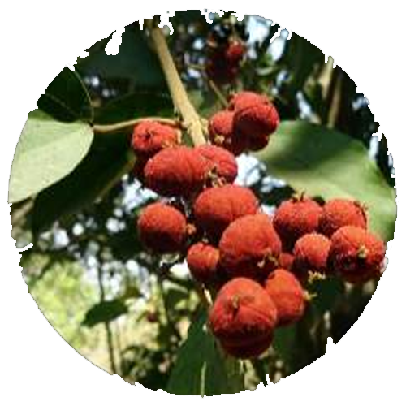
Kamala Tree
Step 1: Research the tree: Gather information about the Kamala tree, including its growth habits, mature size, sunlight requirements, and soil preferences. Step 2: Choose a suitable location: Kamala trees typically prefer full to partial sunlight and well-drained soil. Step 3: Obtain a healthy sapling or seeds: Acquire a healthy Kamala tree sapling from a reputable nursery or garden center. Step 4: Prepare the soil: Kamala trees prefer fertile, well-draining soil. Assess the soil conditions and make any necessary amendments. Step 5: Dig the planting hole: Dig a hole that is wider and slightly deeper than the root ball or seedling container. Step 6: Plant the sapling or seeds: If using a sapling, carefully remove it from its container and place it in the planting hole. Step 7: Backfill and water: Backfill the hole with soil, gently firming it around the roots to remove any air pockets. Step 8: Mulch and provide ongoing care: Apply a layer of organic mulch, such as wood chips or shredded bark, around the base of the tree. Step 9: Watering and maintenance: Water the Kamala tree regularly, especially during the first year or until it becomes established.
Acacia Tree
Step 1: Choose a suitable Acacia species: Acacia trees come in various species, each with its own growth habits and requirements. Step 2: Obtain a healthy sapling: Purchase a healthy Acacia tree sapling from a reputable nursery or garden center. Step 3: Select a planting location: Acacia trees generally prefer full sunlight and well-drained soil. Step 4: Prepare the hole: Dig a hole that is wider and slightly shallower than the root ball of the sapling. Step 5: Amend the soil: Assess the soil conditions and make any necessary amendments. Step 6: Plant the tree: Gently place the Acacia sapling into the hole, making sure it is positioned straight. Step 7: Water thoroughly: After planting, water the tree thoroughly to settle the soil and ensure good root-to-soil contact. Step 8: Mulch the base: Apply a layer of organic mulch, such as wood chips or shredded bark, around the base of the tree. Step 9: Provide ongoing care: Monitor the tree for watering needs, especially during hot and dry periods.
Tulip Tree
Step 1: Choose a suitable location: Tulip trees thrive in well-drained soil and prefer full sunlight. Step 2: Obtain a healthy sapling: Purchase a young tulip tree sapling from a reputable nursery or garden center. Step 3: Prepare the hole: Dig a hole that is wider and slightly shallower than the root ball of the sapling. Step 4: Amend the soil: Tulip trees prefer well-drained soil. Step 5: Plant the tree: Gently place the tulip tree sapling into the hole, making sure it is positioned straight. Step 6: Water thoroughly: After planting, water the tree thoroughly to settle the soil and ensure good root-to-soil contact. Step 7: Mulch the base: Apply a layer of organic mulch, such as wood chips or shredded bark, around the base of the tree. Step 8: Provide ongoing care: Monitor the tree for watering needs, especially during hot and dry periods.
PLANT'S HERBAL AREA
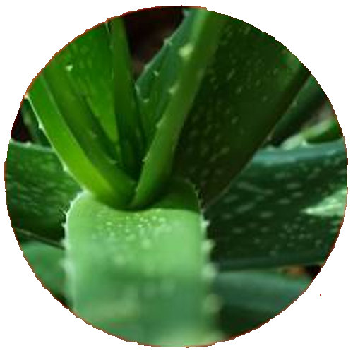
Aloe Vera Plant
Step 1: Know when to transplant. Aloe plants have relatively short roots and heavy leaves, so they are commonly moved to a heavier pot when they become top-heavy and tip over. Step 2: Give the plant adequate sunlight and warmth. Aloe vera plants prefer 8–10 hours of sunlight a day. Step 3: Plant the Aloe vera in well draining soil. Aloe vera plants are adapted for survival in dry conditions, and may rot if planted in soil that collects standing water. Step 4: Cover the root ball when planting but do not let the leaves touch the soil. Place the Aloe vera root ball just below the soil surface. Step 5: Cover the surface of the soil with gravel or pebbles (optional). Place a layer of small rocks around the base of the aloe plant to keep the soil in place and reduce evaporation. Step 6: Do not water for the first few days after planting. Before you start watering, give the aloe plant a few days to repair any roots that may have been damaged during planting.
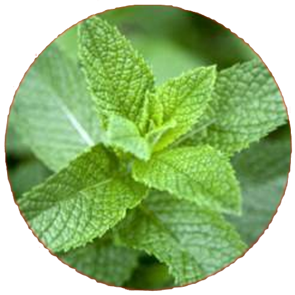
Peppermint Plant
Step 1: Plant mint in spring after the last frost. This fast-growing herb can grow just about anywhere and makes an excellent addition to indoor and outdoor gardens. Step 2: Space mint plants 18 to 24 inches apart. It's best to grow them in pots to keep them from taking over your garden (even if you're planting in the ground). Step 3: Give your garden a great foundation by improving native soil with several inches of aged compost or other rich organic matter. For container growing, consider a premium bagged potting mix. Step 4: Keep soil consistently moist and water when the top inch becomes dry. Step 5: Promote excellent leaf production by regularly feeding with a water-soluble plant food. Step 6: Once plants are established, harvest mint leaves regularly by pinching off the stems.
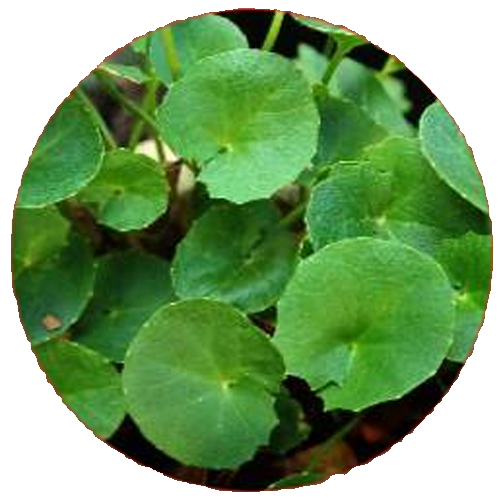
Gotu Kola Plant
Step 1: Plant the seeds in spring or fall. Step 2: Space the seeds 9 to 12 inches apart in the garden or prepare biodegradable paper or peat pots for starting indoors. Step 3: Gently press the seeds into the moist soil or a mix of equal parts peat moss and coarse sand or perlite. Step 4: Keep them moist at all times. Step 5: When starting seeds indoors or in the greenhouse, place pots on a tray on a seed heat mat to keep the potting mix evenly warm. Step 6: The seeds germinate in 30 to 90 days. Wait until the weather warms before transplanting them into the garden or flowerpots on the patio.
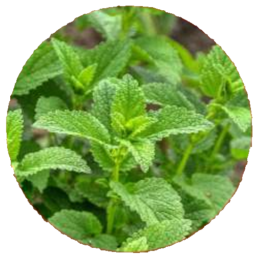
Lemon Balm Plant
Step 1: Plant lemon balm during the warm weather of late spring, once all chances of frost have passed. Step 2: Space lemon balm 20 to 24 inches apart in an area with partial shade and fertile, well-drained soil with a pH of 6.5 to 7.0. Step 3: Start the growing season off right by mixing several inches of aged compost or other rich organic matter into your native soil. Step 4: Check soil moisture every few days and water when the top inch becomes dry. Step 5: Maximize leaf production by regularly feeding with water-soluble plant food. Step 6: Harvest lemon balm leaves anytime once your plant reaches 6 to 8 inches tall; avoid harvesting more than one-third of the plant at a time.
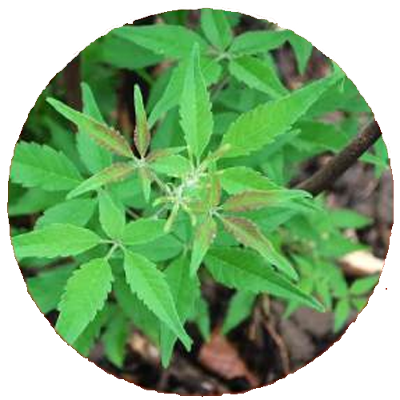
Lagundi Plant
Step 1: Select a suitable location for planting lagundi, where it can receive direct sunlight for at least six hours a day and well-drained soil. Step 2: Prepare the soil by mixing compost and fertilizers to provide nutrients, and clear any weeds or debris. Step 3: Dig a hole that is twice the size of the plant's container and loosen the roots before planting. Step 4: Gently place the lagundi plant into the hole and cover it with soil, firming the ground around the plant to remove air pockets. Step 5: Water the newly planted lagundi thoroughly and regularly, keeping the soil moist but not saturated.
FLOWER'S HERBAL AREA
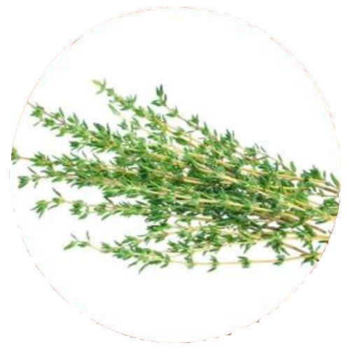
Thyme Flower
Step 1: Plant thyme in spring once chances of frost have passed. Step 2: Space thyme plants 12 to 24 inches apart in a very sunny area with fertile, well-drained soil with a pH close to 7.0. Step 3: Before planting in-ground, improve your existing soil by mixing in several inches of aged compost or other rich organic matter. Step 4: For best results, feed regularly with a water-soluble plant food. Step 5: Keep soil moist and water when the top inch of soil becomes dry. Step 6: Once thyme is established, harvest as needed but avoid pruning more than one-third of the plant at a time.
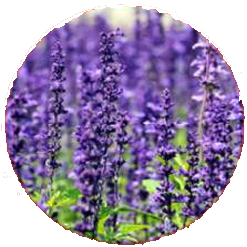
Lavender Flower
Step 1: Plant lavender in spring, once all chances of frost have passed. This beautiful, fragrant herb is a great addition to raised beds, in-ground gardens, and growing in containers. Step 2: Space lavender plants 12 to 18 inches apart in an area with plenty of sunlight and sandy, well-drained soil with a pH of 6.7 to 7.3. Step 3: Give young plants an excellent start to the growing season by mixing in several inches of compost or other rich organic matter into your native soil. Step 4: Lavender survives well in dry conditions, so you'll only have to water when the top 2 inches of soil are dry. Step 5: Promote vibrant blooms by regularly feeding with water-soluble plant food. Step 6: Harvest stems once they're large enough for use. Avoid harvesting more than one-third of the plant at a time.
Calendula Flower
Step 1: Plant calendulas in containers. Plant calendula seeds directly in pots, ideally in spring or autumn. Keep the planter soil moist, and leave the tray in a bright place. You will see leaves in one to two weeks. Step 2: Ensure proper drainage. If you want to keep your calendulas inside, use a well-draining, organic potting soil. Make sure the pots have drainage holes to keep the soil from getting soggy. Step 3: Fertilize the plants. Feed calendulas regularly with a balanced fertilizer. Step 4: Water consistently. During the summer, give your calendulas one to one-and-a-half inches of water once a week. Calendulas will tolerate low-water conditions.
Rose Flower
Step 1: Dig a planting hole large enough to accommodate the existing root system, leaving room to grow Step 2: Remove the rose plant from its pot Step 3: Loosen the root ball a bit and spread out the roots Step 4: Refill the planting hole with soil and any rose food you might use Step 5: Tamp around the roots to remove any air pockets that may have formed in the soil Step 6: Thoroughly water the rose bush once it's planted Step 7: Mulch over the newly planted rose's roots to retain moisture and keep weeds down
Chamomile Flower
Step 1: Purchase Bonnie Plants chamomile from your favorite retailer. You can find a retailer in your area here. Step 2: Wait until after the last spring frost to add chamomile to your garden. It grows well in raised beds, containers, and in-ground gardens. Step 3: Space chamomile plants 8 inches apart in full sun for best flowering. In hot climates, an area with partial afternoon shade is ideal. Step 4: Mix compost or other organic matter into the soil when planting. Step 5: Water immediately after planting, then give plants 1 inch of water per week until well-established. Step 6: Mix a continuous-release fertilizer into the soil at planting time and replenish as directed during the growing season. Step 7: Spread mulch (such as chopped leaves or straw) around the plants to help keep the soil moist. Step 8: Add a support, like bamboo sticks with twine around the plant, if the chamomile gets top-heavy and floppy. Step 9: Harvest flowers with pruning sheets after blooming, when petals begin bending backwards. Step 10: Use chamomile fresh or dry. Dry flowers and leaves completely on a screen, out of direct sunlight. Step 11: Store dried chamomile in an airtight jar in a dark, dry place, like a pantry.
NUT'S HERBAL AREA
Kola Nuts
Step 1: Gather fresh kola nuts: Obtain fresh kola nuts from a reputable source. Step 2: Prepare a planting location: Select a suitable location for planting. Step 3: Prepare the soil: Kola trees prefer slightly acidic to neutral soil with a pH range of 5.5 to 7.0. Step 4: Soak the kola nuts: To improve germination rates, soak the kola nuts in water for 24 to 48 hours. Step 5: Plant the kola nuts: Dig holes in the prepared soil that are about 2 to 3 inches deep. Step 6: Water the planting area: After planting, water the area thoroughly but gently. Step 7: Provide shade: Kola nuts prefer partial shade during their early growth stages. Step 8: Monitor and maintain: Regularly monitor the soil moisture and water the kola nut seedlings as needed to prevent drying out.
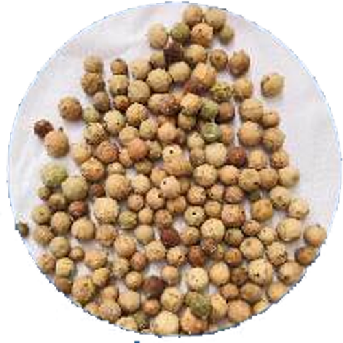
Gall Nuts
Step 1: Identify suitable oak tree species: Gall nuts are formed by certain species of oak trees, such as Quercus infectoria or Quercus lusitanica. Step 2: Prepare a planting location: Select a suitable location for planting the gall nuts. Step 3: Prepare the soil: Gall nuts require soil that is well-drained and fertile. Clear the planting area of any weeds or debris. Step 4: Plant the gall nuts: Dig holes in the prepared soil that are approximately 2 to 3 inches deep. Step 5: Water the planting area: After planting, water the area thoroughly to settle the soil and ensure good contact between the gall nuts and the soil. Step 6: Mulch the area: Apply a layer of organic mulch, such as wood chips or straw, around the base of the planted gall nuts. Step 7: Monitor and maintain: Regularly monitor the soil moisture and water the planting area as needed to keep the soil evenly moist but not waterlogged. Step 8: Patience and growth: Gall nuts take time to germinate and establish.
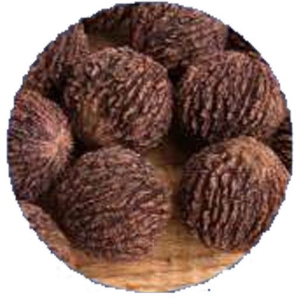
Black Walnuts
Step 1: Obtain black walnut seeds: Collect fresh black walnuts from a reputable source or gather them from mature black walnut trees in your area. Step 2: Prepare the seeds for planting: Black walnuts have a hard shell that can be difficult to crack. Step 3: Select a suitable planting location: Black walnut trees require full sun to thrive. Choose a spacious area that receives plenty of sunlight and has well-drained soil. Step 4: Prepare the soil: Black walnut trees prefer deep, fertile soil. Step 5: Plant the black walnut seeds: Once the stratification period is complete, remove the seeds from the moist medium. Step 6: Cover and water: Cover the black walnut seeds with soil and gently firm it around the seeds. Step 7: Mulch the area: Apply a layer of organic mulch, such as wood chips or straw, around the base of the planted seeds. Step 8: Monitor and maintain: Regularly monitor the soil moisture and water the planting area as needed to keep the soil evenly moist but not waterlogged.
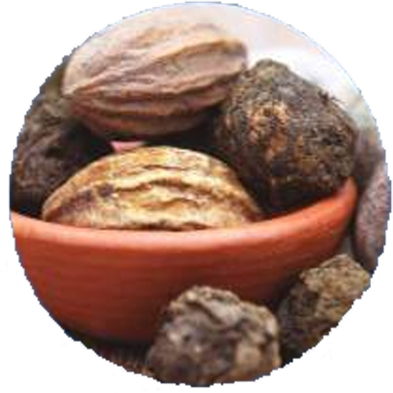
Triphala Amalaki
Step 1: Obtain fresh Amalaki seeds or seedlings from a reputable source. Step 2: Select a planting location with well-drained soil and full sun to partial shade. Step 3: Prepare the soil by removing weeds and loosening it to a depth of about 12 inches. Step 4: Dig a hole that is large enough to accommodate the roots of the seedling. Step 5: Place the Amalaki seedling in the hole, ensuring the top of the root ball is level with or slightly above the soil surface. Step 6: Backfill the hole with soil, gently firming it around the roots. Step 7: Water the seedling thoroughly and maintain regular watering until it is established. Step 8: Provide ongoing care, including fertilization, pruning, and protection from pests or diseases, following the specific requirements of Amalaki trees.
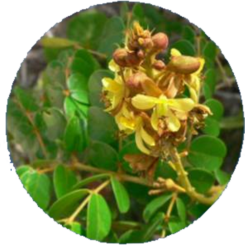
Guilandina bonduc
Step 1: Obtain Bonduc nuts: Obtain fresh Bonduc nuts from a reputable source. Step 2: Scarify the seeds: Bonduc nuts have a hard, thick seed coat that requires scarification to enhance germination. Step 3: Soak the seeds: After scarification, soak the Bonduc nuts in warm water for 24 hours. Step 4: Prepare the planting location: Select a suitable planting location for Bonduc nuts. Step 5: Prepare the soil: Prepare the soil by removing weeds or grass from the planting area. Step 6: Plant the Bonduc nuts: Place the scarified Bonduc nuts in the planting hole with the pointed end facing downward. Step 7: Water the planting area: After planting, water the area thoroughly to settle the soil around the seeds. Step 8: Provide protection: Consider protecting the newly planted Bonduc nuts from animals or pests that may disturb or eat them. Step 9: Germination and growth: Bonduc nuts typically germinate within a few weeks to a few months, depending on the conditions.